Our modern society is based to a large degree on the chemicals we discuss in this chapter. Most are made from petroleum. In Chapter 12 "Organic Chemistry: Alkanes and Halogenated Hydrocarbons" we noted that alkanes—saturated hydrocarbons—have relatively few important chemical properties other than that they undergo combustion and react with halogens. Unsaturated hydrocarbons—hydrocarbons with double or triple bonds—on the other hand, are quite reactive. In fact, they serve as building blocks for many familiar plastics—polyethylene, vinyl plastics, acrylics—and other important synthetic materials (e.g., alcohols, antifreeze, and detergents). Aromatic hydrocarbons have formulas that can be drawn as cyclic alkenes, making them appear unsaturated, but their structure and properties are generally quite different, so they are not considered to be alkenes. Aromatic compounds serve as the basis for many drugs, antiseptics, explosives, solvents, and plastics (e.g., polyesters and polystyrene).
The two simplest unsaturated compounds—ethylene (ethene) and acetylene (ethyne)—were once used as anesthetics and were introduced to the medical field in 1924. However, it was discovered that acetylene forms explosive mixtures with air, so its medical use was abandoned in 1925. Ethylene was thought to be safer, but it too was implicated in numerous lethal fires and explosions during anesthesia. Even so, it remained an important anesthetic into the 1960s, when it was replaced by nonflammable anesthetics such as halothane (CHBrClCF3).
As we noted in Chapter 4 "Covalent Bonding and Simple Molecular Compounds", alkenesA hydrocarbon with one or more carbon–carbon double bonds. are hydrocarbons with carbon-to-carbon double bonds (R2C=CR2) and alkynesA hydrocarbon with a carbon–carbon triple bond. are hydrocarbons with carbon-to-carbon triple bonds (R–C≡C–R). Collectively, they are called unsaturated hydrocarbonsAn alkene or alkyne having one or more multiple (double or triple) bonds between carbon atoms. because they have fewer hydrogen atoms than does an alkane with the same number of carbon atoms, as is indicated in the following general formulas:
Some representative alkenes—their names, structures, and physical properties—are given in Table 13.1 "Physical Properties of Some Selected Alkenes".
Table 13.1 Physical Properties of Some Selected Alkenes
| IUPAC Name | Molecular Formula | Condensed Structural Formula | Melting Point (°C) | Boiling Point (°C) |
|---|---|---|---|---|
| ethene | C2H4 | CH2=CH2 | –169 | –104 |
| propene | C3H6 | CH2=CHCH3 | –185 | –47 |
| 1-butene | C4H8 | CH2=CHCH2CH3 | –185 | –6 |
| 1-pentene | C5H10 | CH2=CH(CH2)2CH3 | –138 | 30 |
| 1-hexene | C6H12 | CH2=CH(CH2)3CH3 | –140 | 63 |
| 1-heptene | C7H14 | CH2=CH(CH2)4CH3 | –119 | 94 |
| 1-octene | C8H16 | CH2=CH(CH2)5CH3 | –102 | 121 |
We used only condensed structural formulas in Table 13.1 "Physical Properties of Some Selected Alkenes". Thus, CH2=CH2 stands for

The double bond is shared by the two carbon atoms and does not involve the hydrogen atoms, although the condensed formula does not make this point obvious. Note that the molecular formula for ethene is C2H4, whereas that for ethane is C2H6.
The first two alkenes in Table 13.1 "Physical Properties of Some Selected Alkenes"—ethene and propene (Figure 13.1 "Ethene and Propene")—are most often called by their common names—ethylene and propylene, respectively. Ethylene is a major commercial chemical. The US chemical industry produces about 25 billion kilograms of ethylene annually, more than any other synthetic organic chemical. More than half of this ethylene goes into the manufacture of polyethylene, one of the most familiar plastics. (For more information about polymers and plastics, see Section 13.5 "Polymers".) Propylene is also an important industrial chemical. It is converted to plastics, isopropyl alcohol, and a variety of other products. (For more information about alcohols, see Chapter 14 "Organic Compounds of Oxygen", Section 14.2 "Alcohols: Nomenclature and Classification".)
Figure 13.1 Ethene and Propene
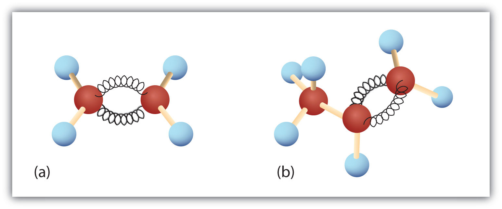The ball-and-spring models of ethene/ethylene (a) and propene/propylene (b) show their respective shapes, especially bond angles.
Although there is only one alkene with the formula C2H4 (ethene) and only one with the formula C3H6 (propene), there are several alkenes with the formula C4H8. Section 13.2 "Cis-Trans Isomers (Geometric Isomers)" begins a discussion of butenes.
Here are some basic rules for naming alkenes from the International Union of Pure and Applied Chemistry (IUPAC):
Substituent groups are named as with alkanes, and their position is indicated by a number. Thus,
is 5-methyl-2-hexene. Note that the numbering of the parent chain is always done in such a way as to give the double bond the lowest number, even if that causes a substituent to have a higher number. The double bond always has priority in numbering.
Name each compound.
Solution
Name each compound.
CH3CH2CH2CH2CH2CH=CHCH3
Just as there are cycloalkanes, there are cycloalkenes. These compounds are named like alkenes, but with the prefix cyclo- attached to the beginning of the parent alkene name.
Draw the structure for each compound.
Solution
First write the parent chain of five carbon atoms: C–C–C–C–C. Then add the double bond between the second and third carbon atoms:
Now place the methyl group on the third carbon atom and add enough hydrogen atoms to give each carbon atom a total of four bonds.
First, consider what each of the three parts of the name means. Cyclo means a ring compound, hex means 6 carbon atoms, and -ene means a double bond.
Draw the structure for each compound.
2-ethyl-1-hexene
cyclopentene
Briefly identify the important distinctions between a saturated hydrocarbon and an unsaturated hydrocarbon.
Briefly identify the important distinctions between an alkene and an alkane.
Classify each compound as saturated or unsaturated. Identify each as an alkane, an alkene, or an alkyne.
Unsaturated hydrocarbons have double or triple bonds and are quite reactive; saturated hydrocarbons have only single bonds and are rather unreactive.
An alkene has a double bond; an alkane has single bonds only.
Draw the structure for each compound.
Draw the structure for each compound.
Name each compound according to the IUPAC system.
Name each compound according to the IUPAC system.

As noted in Chapter 12 "Organic Chemistry: Alkanes and Halogenated Hydrocarbons", there is free rotation about the carbon-to-carbon single bonds (C–C) in alkanes. In contrast, the structure of alkenes requires that the carbon atoms of a double bond and the two atoms bonded to each carbon atom all lie in a single plane, and that each doubly bonded carbon atom lies in the center of a triangle. This part of the molecule’s structure is rigid; rotation about doubly bonded carbon atoms is not possible without rupturing the bond. Look at the two chlorinated hydrocarbons in Figure 13.2 "Rotation about Bonds".
Figure 13.2 Rotation about Bonds
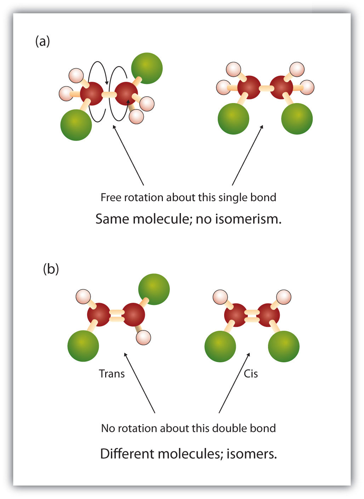In 1,2-dichloroethane (a), free rotation about the C–C bond allows the two structures to be interconverted by a twist of one end relative to the other. In 1,2-dichloroethene (b), restricted rotation about the double bond means that the relative positions of substituent groups above or below the double bond are significant.
In 1,2-dichloroethane (part (a) of Figure 13.2 "Rotation about Bonds"), there is free rotation about the C–C bond. The two models shown represent exactly the same molecule; they are not isomers. You can draw structural formulas that look different, but if you bear in mind the possibility of this free rotation about single bonds, you should recognize that these two structures represent the same molecule:
In 1,2-dichloroethene (part (b) of Figure 13.2 "Rotation about Bonds"), however, restricted rotation about the double bond means that the relative positions of substituent groups above or below the double bond become significant. This leads to a special kind of isomerism. The isomer in which the two chlorine (Cl) atoms lie on the same side of the molecule is called the cis isomerAn isomer in which two substituent groups are attached on the same side of a double bond or ring in an organic molecule. (Latin cis, meaning “on this side”) and is named cis-1,2-dichloroethene. The isomer with the two Cl atoms on opposite sides of the molecule is the trans isomerAn isomer in which two substituent groups are attached to opposite sides of a double bond or ring in a molecule. (Latin trans, meaning “across”) and is named trans-1,2-dichloroethene. These two compounds are cis-trans isomers (or geometric isomers)Isomers that have different configurations because of the presence of a rigid structure such as a double bond or ring., compounds that have different configurations (groups permanently in different places in space) because of the presence of a rigid structure in their molecule.
Consider the alkene with the condensed structural formula CH3CH=CHCH3. We could name it 2-butene, but there are actually two such compounds; the double bond results in cis-trans isomerism (Figure 13.3 "Ball-and-Spring Models of (a) Cis-2-Butene and (b) Trans-2-Butene").
Figure 13.3 Ball-and-Spring Models of (a) Cis-2-Butene and (b) Trans-2-Butene
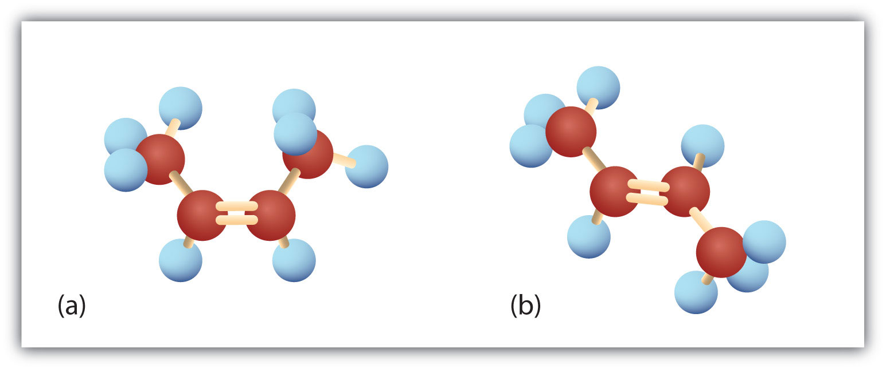Cis-trans isomers have different physical, chemical, and physiological properties.
Cis-2-butene has both methyl groups on the same side of the molecule. Trans-2-butene has the methyl groups on opposite sides of the molecule. Their structural formulas are as follows:
Note, however, that the presence of a double bond does not necessarily lead to cis-trans isomerism. We can draw two seemingly different propenes:
However, these two structures are not really different from each other. If you could pick up either molecule from the page and flip it over top to bottom, you would see that the two formulas are identical.
Thus there are two requirements for cis-trans isomerism:
In these propene structures, the second requirement for cis-trans isomerism is not fulfilled. One of the doubly bonded carbon atoms does have two different groups attached, but the rules require that both carbon atoms have two different groups.
In general, the following statements hold true in cis-trans isomerism:
Cis-trans isomerism also occurs in cyclic compounds. In ring structures, groups are unable to rotate about any of the ring carbon–carbon bonds. Therefore, groups can be either on the same side of the ring (cis) or on opposite sides of the ring (trans). For our purposes here, we represent all cycloalkanes as planar structures, and we indicate the positions of the groups, either above or below the plane of the ring.
Which compounds can exist as cis-trans (geometric) isomers? Draw them.
Solution
All four structures have a double bond and thus meet rule 1 for cis-trans isomerism.
This compound meets rule 2; it has two nonidentical groups on each carbon atom (H and Cl on one and H and Br on the other). It exists as both cis and trans isomers:
This compound meets rule 2; it has two nonidentical groups on each carbon atom and exists as both cis and trans isomers:
Which compounds can exist as cis-trans isomers? Draw them.
What are cis-trans (geometric) isomers? What two types of compounds can exhibit cis-trans isomerism?
Classify each compound as a cis isomer, a trans isomer, or neither.
Cis-trans isomers are compounds that have different configurations (groups permanently in different places in space) because of the presence of a rigid structure in their molecule. Alkenes and cyclic compounds can exhibit cis-trans isomerism.
Draw the structures of the cis-trans isomers for each compound. Label them cis and trans. If no cis-trans isomers exist, write none.
Draw the structures of the cis-trans isomers for each compound. Label them cis and trans. If no cis-trans isomers exist, write none.
The physical properties of alkenes are similar to those of the alkanes. Table 13.1 "Physical Properties of Some Selected Alkenes" (in Section 13.1 "Alkenes: Structures and Names") shows that the boiling points of straight-chain alkenes increase with increasing molar mass, just as with alkanes. For molecules with the same number of carbon atoms and the same general shape, the boiling points usually differ only slightly, just as we would expect for substances whose molar mass differs by only 2 u (equivalent to two hydrogen atoms). Like other hydrocarbons, the alkenes are insoluble in water but soluble in organic solvents.
Alkenes occur widely in nature. Ripening fruits and vegetables give off ethylene, which triggers further ripening. Fruit processors artificially introduce ethylene to hasten the ripening process; exposure to as little as 0.1 mg of ethylene for 24 h can ripen 1 kg of tomatoes. Unfortunately, this process does not exactly duplicate the ripening process, and tomatoes picked green and treated this way don’t taste much like vine-ripened tomatoes fresh from the garden.
Other alkenes that occur in nature include 1-octene, a constituent of lemon oil, and octadecene (C18H36) found in fish liver. Dienes (two double bonds) and polyenes (three or more double bonds) are also common. Butadiene (CH2=CHCH=CH2) is found in coffee. Lycopene and the carotenes are isomeric polyenes (C40H56) that give the attractive red, orange, and yellow colors to watermelons, tomatoes, carrots, and other fruits and vegetables. Vitamin A, essential to good vision, is derived from a carotene. The world would be a much less colorful place without alkenes.
Briefly describe the physical properties of alkenes. How do these properties compare to those of the alkanes?
Without consulting tables, arrange the following alkenes in order of increasing boiling point: 1-butene, ethene, 1-hexene, and propene.
Alkenes have physical properties (low boiling points, insoluble in water) quite similar to those of their corresponding alkanes.
ethene < propene < 1-butene < 1-hexene
Without referring to a table or other reference, predict which member of each pair has the higher boiling point.
Which is a good solvent for cyclohexene, pentane or water?
Alkenes are valued mainly for addition reactionsA reaction in which substituent groups join to hydrocarbon molecules at points of unsaturation—the double or triple bonds., in which one of the bonds in the double bond is broken. Each of the carbon atoms in the bond can then attach another atom or group while remaining joined to each other by a single bond.
Perhaps the simplest addition reaction is hydrogenationA reaction in which hydrogen gas reacts at a carbon-to-carbon double or triple bond or a carbon-to-oxygen double bond to add hydrogen atoms to carbon atoms.—a reaction with hydrogen (H2) in the presence of a catalyst such as nickel (Ni) or platinum (Pt).

The product is an alkane having the same carbon skeleton as the alkene. (The use of hydrogenation to convert unsaturated vegetable oils to saturated fats is discussed in Chapter 17 "Lipids", Section 17.2 "Fats and Oils".)
Alkenes also readily undergo halogenationA reaction in which a halogen reacts at a carbon-to-carbon double or triple bond to add halogen atoms to carbon atoms.—the addition of halogens. Indeed, the reaction with bromine (Br2) can be used to test for alkenes. Bromine solutions are brownish red. When we add a Br2 solution to an alkene, the color of the solution disappears because the alkene reacts with the bromine:

Another important addition reaction is that between an alkene and water to form an alcohol. This reaction, called hydrationThe addition of water to a substance; in organic chemistry, the addition of water across the carbon-to-carbon double bond of an alkene or the carbon-to-oxygen double bond of an aldehyde or ketone., requires a catalyst—usually a strong acid, such as sulfuric acid (H2SO4):

The hydration reaction is discussed further in Chapter 14 "Organic Compounds of Oxygen", Section 14.4 "Reactions That Form Alcohols", where we deal with this reaction in the synthesis of alcohols.
Write the equation for the reaction between CH3CH=CHCH3 and each substance.
Solution
In each reaction, the reagent adds across the double bond.


Write the equation for each reaction.
CH3CH2CH=CH2 with H2 (Ni catalyst)
CH3CH=CH2 with Cl2
CH3CH2CH=CHCH2CH3 with H2O (H2SO4 catalyst)
What is the principal difference in properties between alkenes and alkanes? How are they alike?
If C12H24 reacts with HBr in an addition reaction, what is the molecular formula of the product?
Alkenes undergo addition reactions; alkanes do not. Both burn.
C12H24Br2
Complete each equation.

Complete each equation.


The most important commercial reactions of alkenes are polymerizations, reactions in which small molecules, referred to in general as monomersA small molecule that can be combined with other small molecules to make polymers. (from the Greek monos, meaning “one,” and meros, meaning “parts”), are assembled into giant molecules referred to as polymersA giant molecule formed by the combination of monomers in a repeating manner. (from the Greek poly, meaning “many,” and meros, meaning “parts”). A polymer is as different from its monomer as a long strand of spaghetti is from a tiny speck of flour. For example, polyethylene, the familiar waxy material used to make plastic bags, is made from the monomer ethylene—a gas.
Polyethylene pellets are melted, formed into a giant bubble, and then made into a film that is used in packaging, consumer products, and food services.
There are two general types of polymerization reactions: addition polymerization and condensation polymerization. (For more information about condensation polymerization, see Chapter 15 "Organic Acids and Bases and Some of Their Derivatives", Section 15.8 "Preparation of Esters".) In addition polymerizationA reaction in which monomers add to one another to produce a polymeric product that contains all the atoms of the starting monomers., the monomers add to one another in such a way that the polymer contains all the atoms of the starting monomers. Ethylene molecules are joined together in long chains. The polymerization can be represented by the reaction of a few monomer units:
The bond lines extending at the ends in the formula of the product indicate that the structure extends for many units in each direction. Notice that all the atoms—two carbon atoms and four hydrogen atoms—of each monomer molecule are incorporated into the polymer structure. Because displays such as the one above are cumbersome, the polymerization is often abbreviated as follows:
Many natural materials—such as proteins, cellulose and starch, and complex silicate minerals—are polymers. (For more information about proteins and cellulose/starch, see Chapter 18 "Amino Acids, Proteins, and Enzymes", Section 18.4 "Proteins", and Chapter 16 "Carbohydrates", Section 16.7 "Polysaccharides", respectively.) Artificial fibers, films, plastics, semisolid resins, and rubbers are also polymers. More than half the compounds produced by the chemical industry are synthetic polymers.
Some common addition polymers are listed in Table 13.2 "Some Addition Polymers". Note that all the monomers have carbon-to-carbon double bonds. Many polymers are mundane (e.g., plastic bags, food wrap, toys, and tableware), but there are also polymers that conduct electricity, have amazing adhesive properties, or are stronger than steel but much lighter in weight.
Table 13.2 Some Addition Polymers
| Monomer | Polymer | Polymer Name | Some Uses |
|---|---|---|---|
| CH2=CH2 | ~CH2CH2CH2CH2CH2CH2~ | polyethylene | plastic bags, bottles, toys, electrical insulation |
| CH2=CHCH3 |
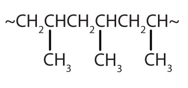
|
polypropylene | carpeting, bottles, luggage, exercise clothing |
| CH2=CHCl |
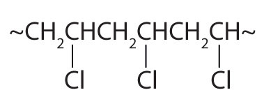
|
polyvinyl chloride | bags for intravenous solutions, pipes, tubing, floor coverings |
| CF2=CF2 | ~CF2CF2CF2CF2CF2CF2~ | polytetrafluoroethylene | nonstick coatings, electrical insulation |
An interesting use of polymers is the replacement of diseased, worn out, or missing parts in the body. For example, about a 250,000 hip joints and 500,000 knees are replaced in US hospitals each year. The artificial ball-and-socket hip joints are made of a special steel (the ball) and plastic (the socket). People crippled by arthritis or injuries gain freedom of movement and relief from pain. Patients with heart and circulatory problems can be helped by replacing worn out heart valves with parts based on synthetic polymers. These are only a few of the many biomedical uses of polymers.
Figure 13.4 Hip Joint Replacement
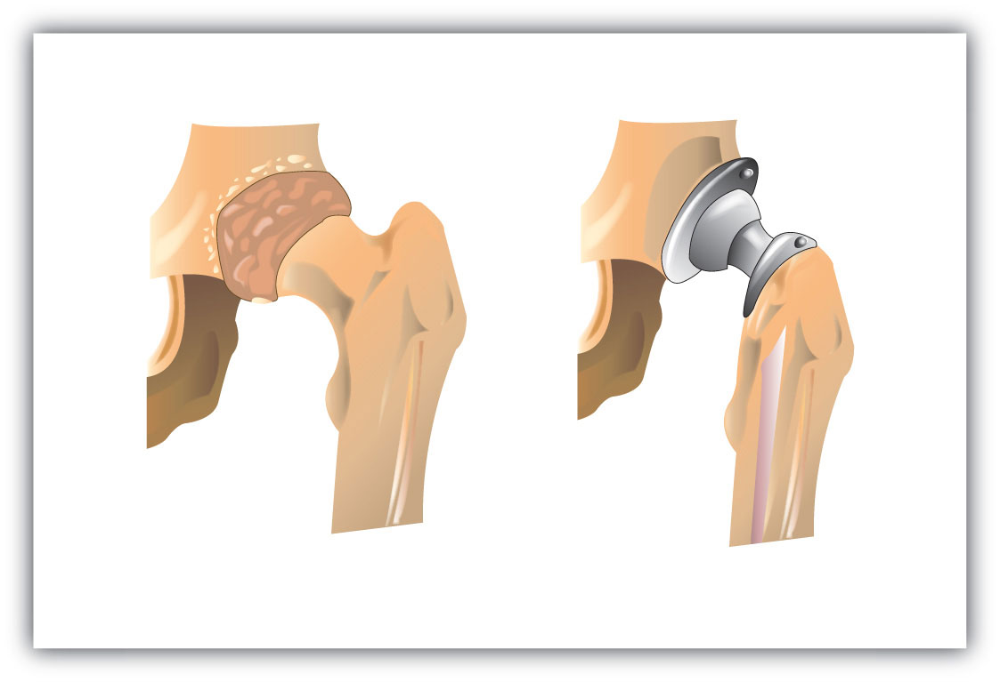Synthetic polymers are an important part of a hip joint replacement. The hip is much like a ball-and-socket joint, and total hip replacements mimic this with a metal ball that fits in a plastic cup.
What is a monomer? What is a polymer? How do polymer molecules differ from the molecules we have discussed in earlier sections of this chapter?
What is addition polymerization? What structural feature usually characterizes molecules used as monomers in addition polymerization?
What is the molecular formula of a polymer molecule formed by the addition polymerization of 175 molecules of vinyl chloride (CH2=CHCl)?
Monomers are small molecules that can be assembled into giant molecules referred to as polymers, which are much larger than the molecules we discussed earlier in this chapter.
In addition polymerization, the monomers add to one another in such a way that the polymer contains all the atoms of the starting monomers.
C350H525Cl175
Write the condensed structural formula of the monomer from which Saran is formed. A segment of the Saran molecule has the following structure: CH2CCl2CH2CCl2CH2CCl2CH2CCl2.
Write the condensed structural formula for the section of a molecule formed from four units of the monomer CH2=CHF.
H2C=CCl2
The simplest alkyne—a hydrocarbon with carbon-to-carbon triple bond—has the molecular formula C2H2 and is known by its common name—acetylene (Figure 13.5 "Ball-and-Spring Model of Acetylene"). Its structure is H–C≡C–H.
Figure 13.5 Ball-and-Spring Model of Acetylene
Acetylene (ethyne) is the simplest member of the alkyne family.
Acetylene is used in oxyacetylene torches for cutting and welding metals. The flame from such a torch can be very hot. Most acetylene, however, is converted to chemical intermediates that are used to make vinyl and acrylic plastics, fibers, resins, and a variety of other products.
Alkynes are similar to alkenes in both physical and chemical properties. For example, alkynes undergo many of the typical addition reactions of alkenes. The International Union of Pure and Applied Chemistry (IUPAC) names for alkynes parallel those of alkenes, except that the family ending is -yne rather than -ene. The IUPAC name for acetylene is ethyne. The names of other alkynes are illustrated in the following exercises.
Briefly identify the important differences between an alkene and an alkyne. How are they similar?
The alkene (CH3)2CHCH2CH=CH2 is named 4-methyl-1-pentene. What is the name of (CH3)2CHCH2C≡CH?
Do alkynes show cis-trans isomerism? Explain.
Alkenes have double bonds; alkynes have triple bonds. Both undergo addition reactions.
4-methyl-1-pentyne
No; a triply bonded carbon atom can form only one other bond. It would have to have two groups attached to show cis-trans isomerism.
Draw the structure for each compound.
Draw the structure for each compound.
Name each alkyne.

Next we consider a class of hydrocarbons with molecular formulas like those of unsaturated hydrocarbons, but which, unlike the alkenes, do not readily undergo addition reactions. These compounds comprise a distinct class, called aromatic hydrocarbonsA hydrocarbon with a benzene-like structure., with unique structures and properties. We start with the simplest of these compounds. Benzene (C6H6) is of great commercial importance, but it also has noteworthy health effects (see “To Your Health: Benzene and Us”).
The formula C6H6 seems to indicate that benzene has a high degree of unsaturation. (Hexane, the saturated hydrocarbon with six carbon atoms has the formula C6H14—eight more hydrogen atoms than benzene.) However, despite the seeming low level of saturation, benzene is rather unreactive. It does not, for example, react readily with bromine, which, as mentioned in Section 13.1 "Alkenes: Structures and Names", is a test for unsaturation.
Benzene is a liquid that smells like gasoline, boils at 80°C, and freezes at 5.5°C. It is the aromatic hydrocarbon produced in the largest volume. It was formerly used to decaffeinate coffee and was a significant component of many consumer products, such as paint strippers, rubber cements, and home dry-cleaning spot removers. It was removed from many product formulations in the 1950s, but others continued to use benzene in products until the 1970s when it was associated with leukemia deaths. Benzene is still important in industry as a precursor in the production of plastics (such as Styrofoam and nylon), drugs, detergents, synthetic rubber, pesticides, and dyes. It is used as a solvent for such things as cleaning and maintaining printing equipment and for adhesives such as those used to attach soles to shoes. Benzene is a natural constituent of petroleum products, but because it is a known carcinogen, its use as an additive in gasoline is now limited.
To explain the surprising properties of benzene, chemists suppose the molecule has a cyclic, hexagonal, planar structure of six carbon atoms with one hydrogen atom bonded to each. We can write a structure with alternate single and double bonds, either as a full structural formula or as a line-angle formula:
However, these structures do not explain the unique properties of benzene. Furthermore, experimental evidence indicates that all the carbon-to-carbon bonds in benzene are equivalent, and the molecule is unusually stable.
Chemists often represent benzene as a hexagon with an inscribed circle:

The inner circle indicates that the valence electrons are shared equally by all six carbon atoms (that is, the electrons are delocalized, or spread out, over all the carbon atoms). It is understood that each corner of the hexagon is occupied by one carbon atom, and each carbon atom has one hydrogen atom attached to it. Any other atom or groups of atoms substituted for a hydrogen atom must be shown bonded to a particular corner of the hexagon. We use this modern symbolism, but many scientists still use the earlier structure with alternate double and single bonds.
Most of the benzene used commercially comes from petroleum. It is employed as a starting material for the production of detergents, drugs, dyes, insecticides, and plastics. Once widely used as an organic solvent, benzene is now known to have both short- and long-term toxic effects. The inhalation of large concentrations can cause nausea and even death due to respiratory or heart failure, while repeated exposure leads to a progressive disease in which the ability of the bone marrow to make new blood cells is eventually destroyed. This results in a condition called aplastic anemia, in which there is a decrease in the numbers of both the red and white blood cells.
How do the typical reactions of benzene differ from those of the alkenes?
Briefly describe the bonding in benzene.
What does the circle mean in the chemist’s representation of benzene?
Benzene is rather unreactive toward addition reactions compared to an alkene.
Valence electrons are shared equally by all six carbon atoms (that is, the electrons are delocalized).
The six electrons are shared equally by all six carbon atoms.
Draw the structure of benzene as if it had alternate single and double bonds.
Draw the structure of benzene as chemists usually represent it today.
Historically, benzene-like substances were called aromatic hydrocarbons because they had distinctive aromas. Today, an aromatic compoundAny compound that contains a benzene ring or has certain benzene-like properties. is any compound that contains a benzene ring or has certain benzene-like properties (but not necessarily a strong aroma). You can recognize the aromatic compounds in this text by the presence of one or more benzene rings in their structure. Some representative aromatic compounds and their uses are listed in Table 13.3 "Some Representative Aromatic Compounds", where the benzene ring is represented as C6H5.
Table 13.3 Some Representative Aromatic Compounds
| Name | Structure | Typical Uses |
|---|---|---|
| aniline | C6H5–NH2 | starting material for the synthesis of dyes, drugs, resins, varnishes, perfumes; solvent; vulcanizing rubber |
| benzoic acid | C6H5–COOH | food preservative; starting material for the synthesis of dyes and other organic compounds; curing of tobacco |
| bromobenzene | C6H5–Br | starting material for the synthesis of many other aromatic compounds; solvent; motor oil additive |
| nitrobenzene | C6H5–NO2 | starting material for the synthesis of aniline; solvent for cellulose nitrate; in soaps and shoe polish |
| phenol | C6H5–OH | disinfectant; starting material for the synthesis of resins, drugs, and other organic compounds |
| toluene | C6H5–CH3 | solvent; gasoline octane booster; starting material for the synthesis of benzoic acid, benzaldehyde, and many other organic compounds |
Which compounds are aromatic?
Solution
Which compounds are aromatic?
In the International Union of Pure and Applied Chemistry (IUPAC) system, aromatic hydrocarbons are named as derivatives of benzene. Figure 13.6 "Some Benzene Derivatives" shows four examples. In these structures, it is immaterial whether the single substituent is written at the top, side, or bottom of the ring: a hexagon is symmetrical, and therefore all positions are equivalent.
Figure 13.6 Some Benzene Derivatives
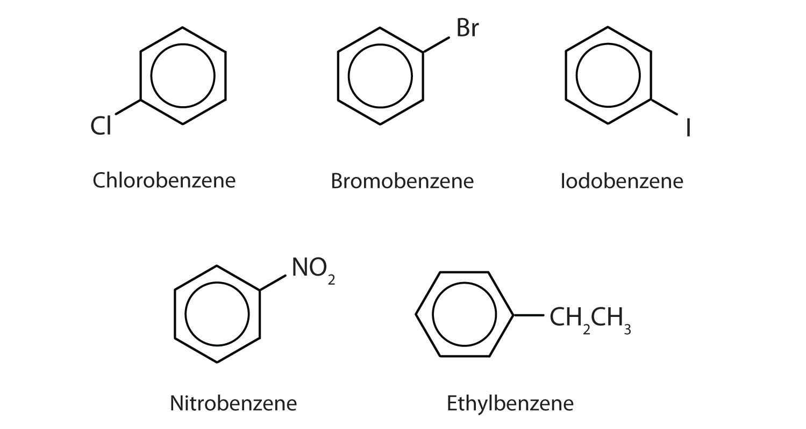These compounds are named in the usual way with the group that replaces a hydrogen atom named as a substituent group: Cl as chloro, Br as bromo, I as iodo, NO2 as nitro, and CH3CH2 as ethyl.
Although some compounds are referred to exclusively by IUPAC names, some are more frequently denoted by common names, as is indicated in Table 13.3 "Some Representative Aromatic Compounds".

When there is more than one substituent, the corners of the hexagon are no longer equivalent, so we must designate the relative positions. There are three possible disubstituted benzenes, and we can use numbers to distinguish them (Figure 13.7 "The Three Isomeric Dichlorobenzenes"). We start numbering at the carbon atom to which one of the groups is attached and count toward the carbon atom that bears the other substituent group by the shortest path.
Figure 13.7 The Three Isomeric Dichlorobenzenes
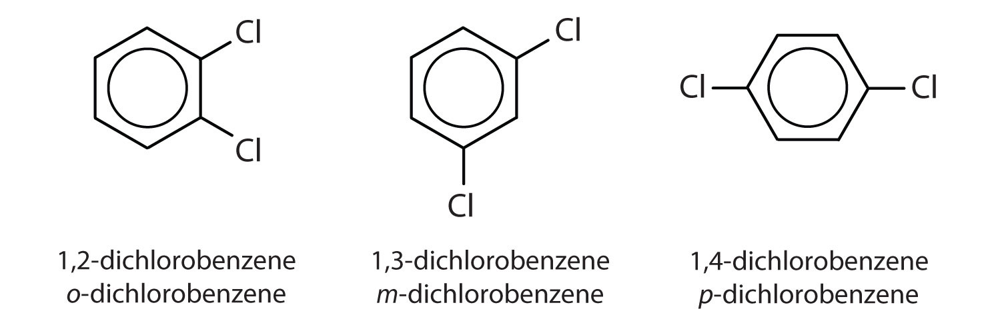In Figure 13.7 "The Three Isomeric Dichlorobenzenes", common names are also used: the prefix ortho (o-) for 1,2-disubstitution, meta (m-) for 1,3-disubstitution, and para (p-) for 1,4-disubstitution.
The substituent names are listed in alphabetical order. The first substituent is given the lowest number. When a common name is used, the carbon atom that bears the group responsible for the name is given the number 1:
Name each compound using both the common name and the IUPAC name.
Solution
The nitro (NO2) group is a common substituent in aromatic compounds. Many nitro compounds are explosive, most notably 2,4,6-trinitrotoluene (TNT).
Name each compound using both the common name and the IUPAC name.
Sometimes an aromatic group is found as a substituent bonded to a nonaromatic entity or to another aromatic ring. The group of atoms remaining when a hydrogen atom is removed from an aromatic compound is called an aryl groupA group derived from an aromatic hydrocarbon by the removal of a hydrogen atom.. The most common aryl group is derived from benzene (C6H6) by removing one hydrogen atom (C6H5) and is called a phenyl group, from pheno, an old name for benzene.
Some common aromatic hydrocarbons consist of fused benzene rings—rings that share a common side. These compounds are called polycyclic aromatic hydrocarbons (PAHs)An aromatic hydrocarbon consisting of fused benzene rings sharing a common side..
The three examples shown here are colorless, crystalline solids generally obtained from coal tar. Naphthalene has a pungent odor and is used in mothballs. Anthracene is used in the manufacture of certain dyes. Steroids, a large group of naturally occurring substances, contain the phenanthrene structure. (For more information about steroids, see Chapter 17 "Lipids", Section 17.4 "Steroids".)
The intense heating required for distilling coal tar results in the formation of PAHs. For many years, it has been known that workers in coal-tar refineries are susceptible to a type of skin cancer known as tar cancer. Investigations have shown that a number of PAHs are carcinogens. One of the most active carcinogenic compounds, benzopyrene, occurs in coal tar and has also been isolated from cigarette smoke, automobile exhaust gases, and charcoal-broiled steaks. It is estimated that more than 1,000 t of benzopyrene are emitted into the air over the United States each year. Only a few milligrams of benzopyrene per kilogram of body weight are required to induce cancer in experimental animals.
Substances containing the benzene ring are common in both animals and plants, although they are more abundant in the latter. Plants can synthesize the benzene ring from carbon dioxide, water, and inorganic materials. Animals cannot synthesize it, but they are dependent on certain aromatic compounds for survival and therefore must obtain them from food. Phenylalanine, tyrosine, and tryptophan (essential amino acids) and vitamins K, B2 (riboflavin), and B9 (folic acid) all contain the benzene ring. (For more information about vitamins, see Chapter 18 "Amino Acids, Proteins, and Enzymes", Section 18.9 "Enzyme Cofactors and Vitamins".) Many important drugs, a few of which are shown in Table 13.4 "Some Drugs That Contain a Benzene Ring", also feature a benzene ring.
So far we have studied only aromatic compounds with carbon-containing rings. However, many cyclic compounds have an element other than carbon atoms in the ring. These compounds, called heterocyclic compounds, are discussed in Chapter 15 "Organic Acids and Bases and Some of Their Derivatives", Section 15.13 "Amines as Bases". Some of these are heterocyclic aromatic compounds.
Table 13.4 Some Drugs That Contain a Benzene Ring
| Name | Structure |
|---|---|
| aspirin |

|
| acetaminophen |
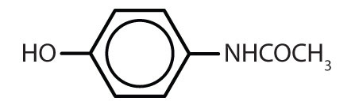
|
| ibuprofen |
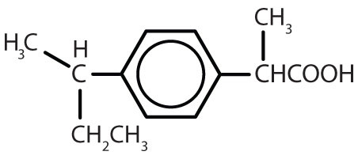
|
| amphetamine |
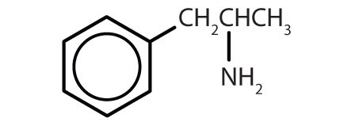
|
| sulfanilamide |
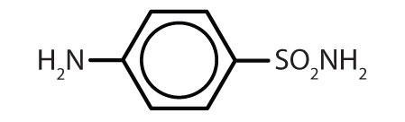
|
Briefly identify the important characteristics of an aromatic compound.
What is meant by the prefixes meta, ortho, or para? Give the name and draw the structure for a compound that illustrates each.
What is a phenyl group? Give the structure for 3-phenyloctane.
An aromatic compound is any compound that contains a benzene ring or has certain benzene-like properties.
meta = 1,3 disubstitution; (answers will vary)
ortho = 1,2 disubstitution
para = 1,4 disubstitution or 1-bromo-4-chlorobenzene
phenyl group: C6H5 or
3-phenyloctane:
Is each compound aromatic?
Is each compound aromatic?
Draw the structure for each compound.
Draw the structure for each compound.
Name each compound with its IUPAC name.
Name each compound with its IUPAC name.

To ensure that you understand the material in this chapter, you should review the meanings of the bold terms in the following summary and ask yourself how they relate to the topics in the chapter.
Any hydrocarbon containing either a double or triple bond is an unsaturated hydrocarbon. Alkenes have a carbon-to-carbon double bond. The general formula for alkenes with one double bond is CnH2n. Alkenes can be straight chain, branched chain, or cyclic. Simple alkenes often have common names, but all alkenes can be named by the system of the International Union of Pure and Applied Chemistry.
Cis-trans isomers (or geometric isomers) are characterized by molecules that differ only in their configuration around a rigid part of the structure, such as a carbon–to-carbon double bond or a ring. The molecule having two identical (or closely related) atoms or groups on the same side is the cis isomer; the one having the two groups on opposite sides is the trans isomer.
The physical properties of alkenes are quite similar to those of alkanes. Like other hydrocarbons, alkenes are insoluble in water but soluble in organic solvents.
More reactive than alkanes, alkenes undergo addition reactions across the double bond:
Addition of hydrogen (hydrogenation):
CH2=CH2 + H2 → CH3CH3Addition of halogen (halogenation):
CH2=CH2 + X2 → XCH2CH2Xwhere X = F, Cl, Br, or I.
Addition of water (hydration):
CH2=CH2 + HOH → HCH2CH2OHAlkenes also undergo addition polymerization, molecules joining together to form long-chain molecules.
…CH2=CH2 + CH2=CH2 + CH2=CH2 +…→…CH2CH2–CH2CH2–CH2CH2–…The reactant units are monomers, and the product is a polymer.
Alkynes have a carbon-to-carbon triple bond. The general formula for alkynes is CnH2n − 2. The properties of alkynes are quite similar to those of alkenes. They are named much like alkenes but with the ending -yne.
The cyclic hydrocarbon benzene (C6H6) has a ring of carbon atoms. The molecule seems to be unsaturated, but it does not undergo the typical reactions expected of alkenes. The electrons that might be fixed in three double bonds are instead delocalized over all six carbon atoms.
A hydrocarbon containing one or more benzene rings (or other similarly stable electron arrangements) is an aromatic hydrocarbon, and any related substance is an aromatic compound. One or more of the hydrogen atoms on a benzene ring can be replaced by other atoms. When two hydrogen atoms are replaced, the product name is based on the relative position of the replacement atoms (or atom groups). A 1,2-disubstituted benzene is designated as an ortho (o-) isomer; 1,3-, a meta (m-) isomer; and 1,4-, a para (p-) isomer. An aromatic group as a substituent is called an aryl group.
A polycyclic aromatic hydrocarbon (PAH) has fused benzene rings sharing a common side.
Classify each compound as saturated or unsaturated.
Classify each compound as saturated or unsaturated.

Give the molecular formula for each compound.
When three isomeric pentenes—X, Y, and Z—are hydrogenated, all three form 2-methylbutane. The addition of Cl2 to Y gives 1,2-dichloro-3-methylbutane, and the addition of Cl2 to Z gives 1,2-dichloro-2-methylbutane. Draw the original structures for X, Y, and Z.
Pentane and 1-pentene are both colorless, low-boiling liquids. Describe a simple test that distinguishes the two compounds. Indicate what you would observe.
Draw and name all the alkene cis-trans isomers corresponding to the molecular formula C5H10. (Hint: there are only two.)
The complete combustion of benzene forms carbon dioxide and water:
C6H6 + O2 → CO2 + H2OBalance the equation. What mass, in grams, of carbon dioxide is formed by the complete combustion of 39.0 g of benzene?
Describe a physiological effect of some PAHs.
What are some of the hazards associated with the use of benzene?
What is wrong with each name? Draw the structure and give the correct name for each compound.
What is wrong with each name?
Following are line-angle formulas for three compounds. Draw the structure and give the name for each.
Following are ball-and-stick molecular models for three compounds (blue balls represent H atoms; red balls are C atoms). Write the condensed structural formula and give the name for each.
Add bromine solution (reddish-brown) to each. Pentane will not react, and the reddish-brown color persists; 1-pentene will react, leaving a colorless solution.
2C6H6 + 15O2 → 12CO2 + 6H2O; 132 g
carcinogenic, flammable